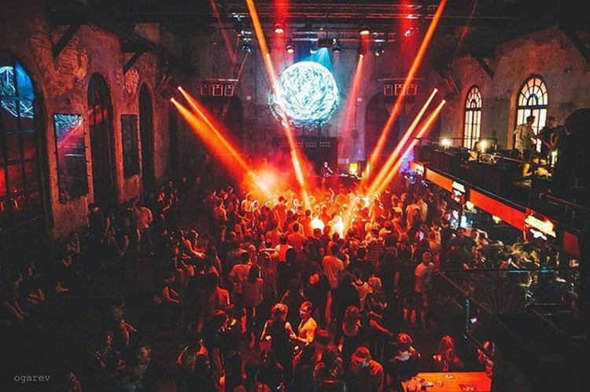

Gazgolder (также Творческое Объединение «Gazgolder», «Газгольдер») — российский лейбл звукозаписи[к 1][3], клуб[к 2][3], продюсерский центр[4], агентство по менеджменту и продвижению артистов. На его базе производится музыкальная, видео- и кинопродукция[3], организуются концерты[5], фестивали[к 3][6][7], спектакли, выставки и прочие культурные мероприятия. Владельцами являются Василий Вакуленко, Евгений Антимоний, Максим Брылин, Азамат Мусагалиев и другие[3][8][1]. Компания также имеет собственные арт-бюро, чайную[к 2][9], ресторан азиатской кухни[к 2][9][3], сеть пивных спорт-баров[к 4], сеть магазинов фирменной продукции[к 5][3], сеть вейп-шопов[к 6] и ювелирную компанию[к 7][3].
Творческое объединение возникло вокруг закрытого клуба «Газгольдер», основанного Русланом Таркинским[10] в марте 2005 года в пустующем здании бывшего московского газового завода «Арма», построенного в середине XIX века. К открытию клуба и созданию объединения имел отношение Богдан Титомир, который заметил рэпера Басту, пригласил в тусовку и начал его продюсировать[11][1][5]. Владельцем был (и продолжает являться в доле с Бастой по сей день[3]) Евгений Антимоний[1]. В 2006 году появляется одноимённая звукозаписывающая студия и лейбл, на котором выходит первый альбом Басты. Соучредителями лейбла являются Денис Крючков и Юрий «Жора» Булавин[2]. В 2007 году Баста стал совладельцем музыкального лейбла «Газгольдер»[3]. Также в 2007 году открывается чайная Андрея Цукерберга[9]. В 2008 году в клубе состоялся закрытый показ фильмов «Чайный пьяница» и «Рвы». С 2009 года в «Газгольдере» начинает работать ресторан китайской кухни[9]. С 2010 года ежегодно в середине июля творческое объединение проводит большие концерты. Первые годы площадкой выступал Зелёный театр в Парке Горького в Москве, а совместные выступления давали Баста и Гуф. Первое мероприятие прошло 21 июля[12]. Спустя год исполнители собрали под проливным дождём 8 тысяч человек[13], а в 2012 году концерт прошёл 19 июля[14]. В 2011 году состав «Газгольдера» пополнился коллективом «Триагрутрика» и рэпером Смоки Мо[15]. Агентство занялось букингом артистов. На Gazgolder с 27 июля 2012 по 5 февраля 2013 года выходят с 9 по 15 выпуски «Вестирэпа»[16] — авторского интернет-проекта на YouTube, впоследствии переросшего в крупнейший в России YouTube-канал про рэп — «VSRAP». В 2013 году мероприятие «Баста / Гуф» сменило формат и стало называться фестивалем «Баста+», где вместе с Бастой выступали и другие представители лейбла. 18 июля в парке выступили Тати, Словетский, Смоки Мо, группы «АК-47» и «Триагрутрика» без участия Гуфа[17]. В 2014 году 17 июля на фестивале под открытым небом выступили Баста, Гуф, Смоки Мо, «АК-47», Тати, Словетский, «Триагрутрика», Скриптонит и Tony Tonite[18]. Последний фестиваль «Баста+» в Зелёном театре прошёл 16 июля 2015 года и собрал не только исполнителей рэпа, но и рока. С Бастой выступили Тати, «АК-47», Смоки Мо, «Триагрутрика», «Нервы», Скриптонит, QП, Ноггано, Словетский, Tony Tonite и Nel[19]. В тот же год вышел сборник «Баста+ 2015», в треклисте которого композиции артистов лейбла. В феврале 2014 года новым резидентом лейбла стал Скриптонит[20]. 24 апреля 2014 года в кинопрокат вышел полнометражный фильм «Газгольдер», собравший 37 млн рублей за первую неделю показов[21]. В 2015 году «Газгольдер» переезжает в другое здание того же завода[9]. В феврале 2016 года в клубе «Газгольдер» состоялся закрытый показ фильма «Ке-ды» режиссёра Сергея Соловьёва, в котором в роли военного участвовал Вакуленко[22]. К фильму Бастой было записано три песни и снято два клипа. Также в список саундтреков вошли и другие композиции Василия. С 7 июля 2016 года на радиостанции DFM у объединения появилась собственная передача «Gazgolder Live», в эфире которой Василий Вакуленко, Вадим Карпенко и Сергей Мезенцев брали интервью у музыкантов и других видных персон[23]. Вещание программы завершено в 2017 году. Ежегодный июльский фестиваль под открытым небом с новым названием «Gazgolder Live» с 2016 года стал проводиться на территории завода «Арма». В этом году на сцене выступили Баста, Тати, Скриптонит, Смоки Мо, ATL, Tony Tonite, NEL, QП, Charusha, Словетский, группы «Триагрутрика», «АК-47», «Нервы», Эра Канн, Lil Kate, DJ Minimi и DJ Mixoid[24]. По его окончанию рэпер Децл пожаловался в сети на громкую музыку в позднее время. Баста высмеял Кирилла Толмацкого, после чего всё это переросло в несколько судебных дел (см. Конфликт с Децлом). В сентябре 2016 года певица Тати покинула объединение Gazgolder и продолжила сольную карьеру[25]. В марте 2017 года участниками объединения стали украинский рэпер T-Fest и московский артист Саша Чест[26]. Покинули лейбл украинская рок-группа «Нервы» и белорусский музыкант Tony Tonite, однако сотрудничество с ними в рамках проектов продолжится[26]. Очередной фестиваль Gazgolder Live в 2017 году прошёл 21 июля. На его сцене выступили не только резиденты лейбла Баста, Смоки Мо, Скриптонит, T-Fest, Словетский и Саша Чест, но и ATL, Хаски, MiyaGi и Эндшпиль, Jillzay и Cvpellv[27]. Хостер Zloi Negr 7 августа 2017 года выпустил 30-минутный лонгмикс Zloi Gaz Mix. По его словам, работа была сделана с одобрения Басты. Треклист релиза содержит последние хиты артистов «Газгольдера» — Скриптонита, Ноггано, Смоки Мо, T-Fest, Словетского, а также других артистов, некоторые куплеты которых не были опубликованы ранее[28]. 11 августа вместе с видеоклипом на YouTube «Айловаю» представлены новые резиденты «Газгольдера» — группа MODI из Нижнего Новгорода. Их работы сочетают трэп-соул, фанк, ритм-энд-блюз, рэп, поп-музыку новой волны[29]. В конце года ещё одним участником объединения стал исполнитель Matrang[30]. 28 декабря 2020 года участники лейбла Gazgolder представили новогодний концерт «GazЗаказ», где вживую исполнили свои главные хиты. В записи приняли участие Баста, T-Fest, Matrang, Anikv, Вадяра Блюз, Zivert, SALUKI, Kyivstoner и Lucaveros.